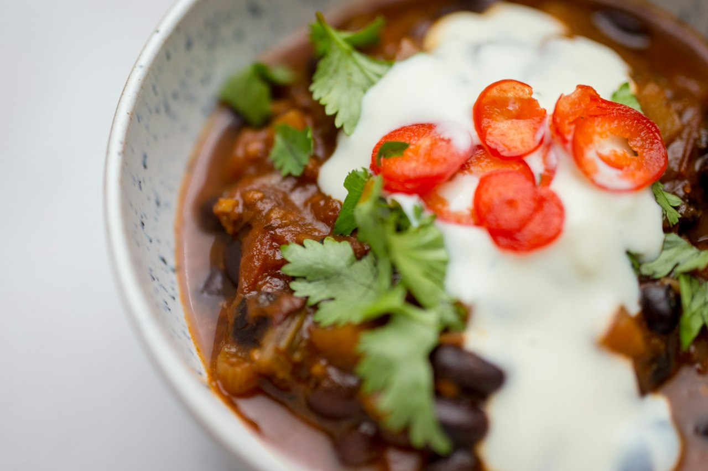

Fond-Rescue Black Bean Soup
Zero-waste blended black bean soup built on the onion-and-beef fond left in the pan, with beef bone broth, smoked salt, a splash of cream, and cheddar.
Soup · High Protein · High Fiber · Dinner · Meal Prep

Per serving
312kcal
22gprotein
Makes 4 servings. Whole batch: 1250 kcal, 86g protein.
Ingredients
Steps
- Put the fond pan back over medium heat. Pour in about 1 cup of the bone broth and scrape up every browned bit.
- Add black beans, remaining broth, garlic granules, oregano, and basil. Simmer 15 minutes.
- Blend until smooth with an immersion blender, or leave it a little chunky if you prefer.
- Stir in the cream, season with smoked sea salt, and simmer 2 to 3 more minutes.
- Ladle into bowls and top with cheddar.
Cook's notes
Doubles as a chili base: stir in seasoned beef mince and a can of diced tomatoes and simmer until thick. The natural follow-up to a smash slider night.